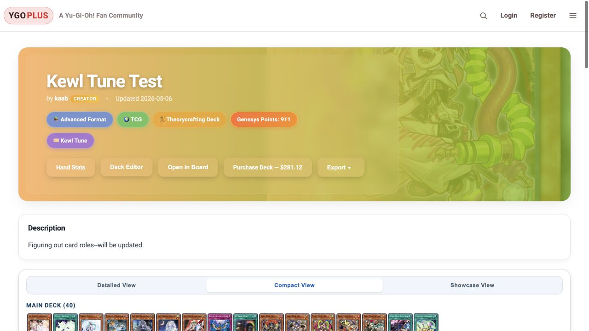
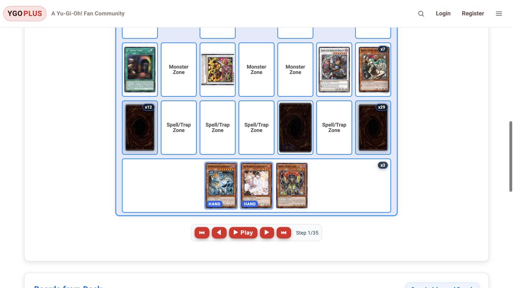

01
Build and organize
Search cards, assemble decks, assign card roles, and import or export deck lists.
YGOPlus connects Yu-Gi-Oh! deck building, opening-hand probability analysis, and combo recording on interactive boards.
Watch the 46-second walkthrough ↗Python / Flask · PostgreSQL · JavaScript
Built and deployed as a community tool, with AI-assisted development and hands-on product and UX work.

Deck composition, probability calculations, and combo notes often live in separate tools. YGOPlus connects them so a saved deck can lead directly into analysis and a board walkthrough.
Search cards, assemble decks, assign card roles, and import or export deck lists.
Inspect sample hands, calculate basic probabilities, and run simulations for more specific hand conditions.
Move cards between board zones, record steps, replay a sequence, and search saved boards.
A silent walkthrough with chapter labels, assembled from existing product recordings. The footage shows an earlier interface; screenshots below were captured in October 2026. Historical card prices, format points, and membership labels are not current recommendations.
The board represents player-authored steps. It is a planning and documentation tool, not an automated game-rules engine.

The work extended beyond displaying cards: deck data, probability conditions, board sequences, and account permissions had to agree across the application.
Decks separate main, extra, and side cards, track quantities, and support import/export and card-role tagging. Those same saved lists feed the analysis and board workflows, so users can work from a consistent starting point.
For more involved opening-hand conditions, the application repeatedly samples hands and evaluates combinations of card roles and specific cards. This estimates the chance of drawing a usable combination under the player's chosen constraints, rather than predicting the winner of a game.
Higher trial budgets reduce sampling noise but consume more server time. The implementation separates preview and higher-precision runs, with account allowances and concurrency controls to keep expensive requests from overwhelming the site.
Boards connect a deck to starting hands, opponent cards, zones, and recorded steps. Players can document a sequence, replay it, and find saved boards. The challenge is preserving a coherent sequence of state changes while keeping the board usable as a visual planning tool.
Public, unlisted, and private content require access checks alongside sharing and account workflows. Marketplace data adds caching and fallback behavior; subscriptions add checkout, webhook, and portal state. Each integration brings failure cases beyond the main interface.
The application also became a practical exercise in controlling resource use, keeping billing state consistent, and measuring improvements.
Removed unused nested card data from the in-memory search index. In three isolated Python 3.13 runs, median RSS fell from 186.53 to 149.75 MiB. A comparison checked 15,220 responses for unchanged output.
Measured locally for this component; not a claim about total production memory or hosting savings.
Converted seven original recordings from about 217.3 MiB to 7.8 MiB. Replaced automatic playback with lazy posters and click-to-play videos, allowing only one to play at a time.
Asset-size reduction; actual bandwidth savings depend on visitor behavior.
Used database-backed allowances and a PostgreSQL advisory lock to coordinate simulation work across application workers. Free and Supporter accounts have different budgets, while repeated or concurrent requests are constrained.
Integrated Stripe Checkout, webhooks, and the customer portal, with duplicate-checkout protection and subscription-state checks. Tested purchase and cancellation paths in Stripe test mode.
YGOPlus grew from a personal interest into a deployed community application. Maintaining it made operating costs and the scope of ongoing work part of the product decisions. This case study preserves a demonstration independently of the application hosting.
The strongest lessons were in connecting a complete user workflow, maintaining a deployed application, and balancing feature depth against infrastructure costs. A future version would validate one narrow user need before expanding the feature set.
This case study preserves the product demonstration without requiring an application account, a payment integration, or a running database.
Read the technical project overview ↗